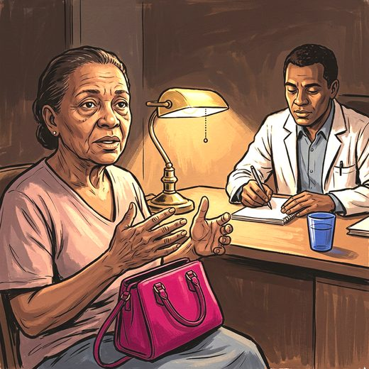

Consulta rápida à beira do leito
Condutas, doses e interações.
Referências da aula · 6
- Riemann D, Espie CA, Altena E, et al. The European Insomnia Guideline: an update on the diagnosis and treatment of insomnia 2023. J Sleep Res. 2023;32(6):e14035. PMID 38016484. doi:10.1111/jsr.14035.PubMedDOI
- Edinger JD, Arnedt JT, Bertisch SM, et al. Behavioral and psychological treatments for chronic insomnia disorder in adults: an American Academy of Sleep Medicine clinical practice guideline. J Clin Sleep Med. 2021;17(2):255-62. PMID 33164742. doi:10.5664/jcsm.8986.PubMedDOI
- Patil SP, Ayappa IA, Caples SM, et al. Treatment of adult obstructive sleep apnea with positive airway pressure: an American Academy of Sleep Medicine clinical practice guideline. J Clin Sleep Med. 2019;15(2):335-43. PMID 30736887. doi:10.5664/jcsm.7640.PubMedDOI
- Sateia MJ, Buysse DJ, Krystal AD, Neubauer DN, Heald JL. Clinical practice guideline for the pharmacologic treatment of chronic insomnia in adults: an American Academy of Sleep Medicine clinical practice guideline. J Clin Sleep Med. 2017;13(2):307-49. PMID 27998379. doi:10.5664/jcsm.6470.PubMedDOI
- Brower D, Pan E, Goss W, Kwon Y, Healy WJ. Obstructive sleep apnea and aging: a narrative review. Sleep Med Res. 2025;16(3):139-50. PMID 41459405. doi:10.17241/smr.2025.02964.PubMedDOI
- Kitakata H, Kohno T, Fukuda K. Sleep-disordered breathing in the elderly: is it distinct from that in the younger or middle-aged populations? J Thorac Dis. 2018;10(Suppl 9):S1102-7. PMID 29849205. doi:10.21037/jtd.2018.03.179.PubMedDOI